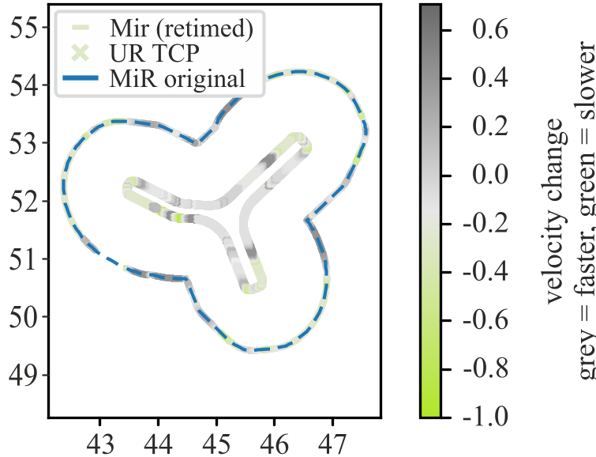
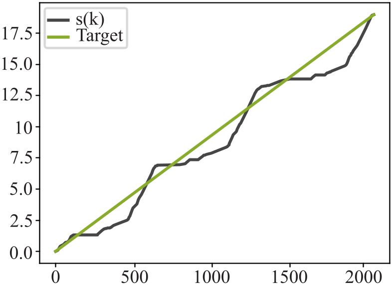
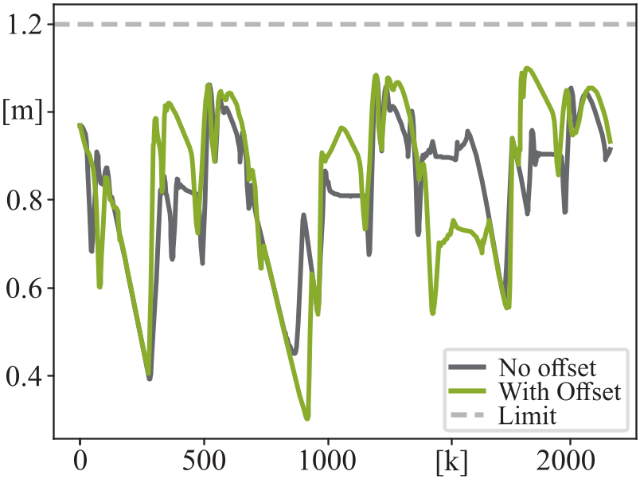

Chapter overview
Trajectory Retiming
Trajectory retiming is applied after geometric planning in order to smooth the motion of the mobile platform without modifying the underlying path. The objective is to redistribute the temporal progression along the fixed MiR trajectory such that velocity and acceleration peaks are reduced while the total execution time and the timing of the TCP trajectory remain unchanged.
- The initially planned trajectory is geometrically feasible, but its time-parameterization leads to discontinuous velocity profiles, excessive jerk, and unnecessarily high platform velocities, particularly in convex sections of the print path.
- Retiming is formulated as an index-offset reparameterization that stretches dynamically demanding trajectory regions in time and compresses less critical segments.
- An equivalent arc-length representation is used that accounts not only for translational motion, but also for rotation-induced motion of the eccentrically mounted manipulator base.
- The resulting index offset is scaled and refined such that reachability constraints are preserved while peak velocity is reduced and the required compensatory motion of the manipulator becomes smoother.


